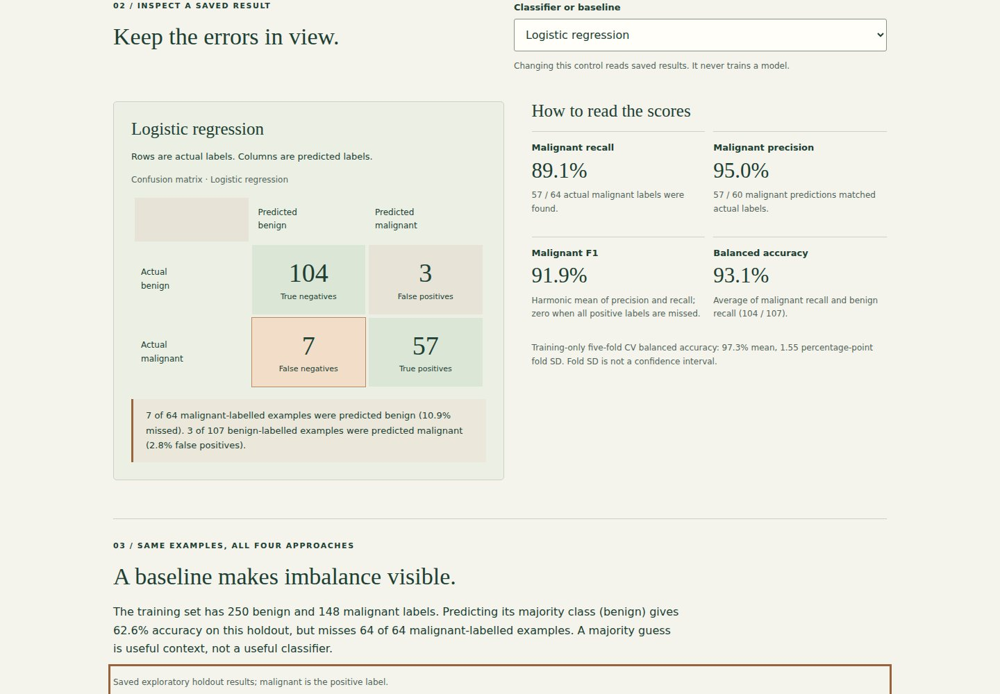
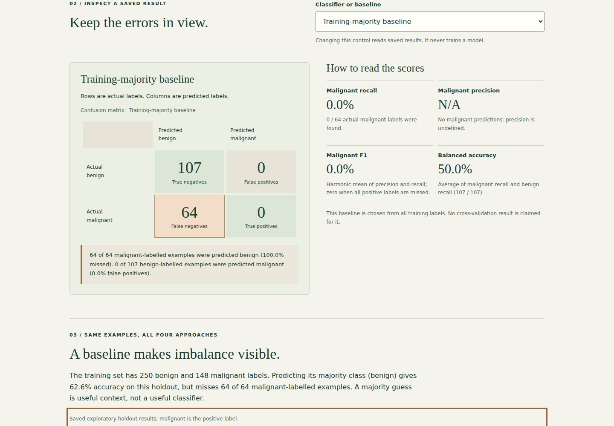
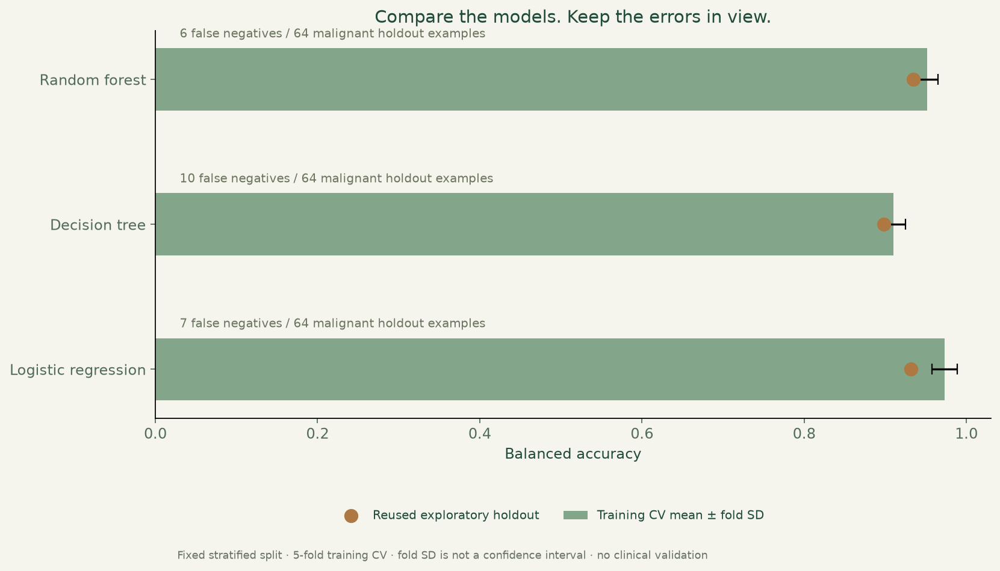
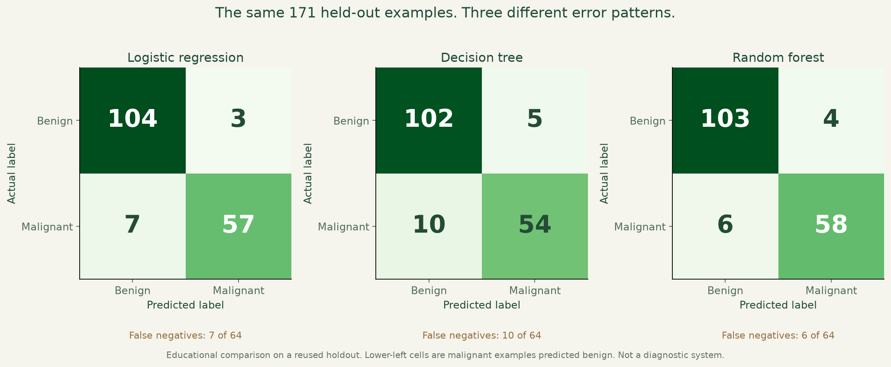

Breast cancer classification.
Explore saved classifier errors, compare a training-majority baseline and see why accuracy alone can mislead.
Public demo: browser-based static version. See source for architecture and limitations.

What I built
Turned the reproducible three-model evaluation into an auditable, read-only results lab. Every confusion count and score comes from saved predictions, with a baseline selected only from training labels.
Why it matters
A high accuracy can hide systematically missed examples when classes are imbalanced. The project makes error types, denominators and evaluation limits visible before interpreting a model comparison.
How it works
- 01
Reproduce the existing fixed three-model evaluation with all 30 features and preprocessing inside training-only cross-validation.
- 02
Reconcile saved predictions with source rows, confusion matrices and scores; compute a majority baseline using training labels only.
- 03
Choose a saved classifier to explore its errors, malignant precision/recall/F1 and balanced accuracy; controls read results without retraining.
The technical challenge
Accuracy rewards majority guessing on an imbalanced dataset. The useful challenge is to explain which examples were missed and what each denominator means, without turning a reused exploratory holdout into a model-selection claim. The exporter cross-checks independent saved artifacts and carries their hashes into a browser that cannot train, tune or accept patient inputs.
What it demonstrates
Reproducible machine learning, class-imbalance analysis, precise metric interpretation, data-integrity checks and accessible frontend development.
Evidence, with context.
Saved predictions from the unchanged three-model evaluation reconcile with source labels and confusion counts. Logistic regression: 7 missed / 64, Decision tree: 10 missed / 64, Random forest: 6 missed / 64. The training-majority baseline scores 62.6% accuracy but misses 64 of 64 malignant-labelled holdout examples. The explorer reports positive-class precision/recall/F1 and balanced accuracy without retraining. This repeatedly reused holdout is exploratory, with no independent or clinical validation.
Verified source: 0ecd0b99d3d3 · Tests and visual capture ↗






Scope and limitations
Educational analysis of a public teaching dataset, not a diagnostic system. This browser reads saved results only; it accepts no patient inputs and trains no models. The holdout has been reused across models and portfolio iterations, so it is exploratory rather than an untouched final test or an unbiased selection estimate. The baseline is context, not a new tuned classifier. No independent cohort, clinical validation, calibration study or causal feature interpretation is claimed.
Visual provenance and source attribution are recorded in the evidence register ↗.
Under the surface.
Architecture, methods and improvements
A Python export independently reconciles source hashes, fixed partitions, saved prediction labels, confusion counts and metrics before generating the explorer JSON. A training-majority baseline uses 250 benign and 148 malignant training labels. Malignant precision is explicitly undefined when a model predicts no positives; F1 is zero when it misses every positive. The existing evaluation, training-only five-fold CV and figure generation remain unchanged. Browser tests check all four approaches at desktop/mobile widths, keyboard selection, exact rendered values and loading failure.
Try it locally
Install requirements.txt, run python evaluate.py, python -m unittest discover -p "test_*.py" -v, python plot_portfolio.py and python build_explorer.py. Serve docs/ with a local static server. npm ci and npm run test:browser run repeatable desktop/mobile checks. The original notebook remains separate.
The portfolio is a static GitHub Pages site. Server applications run locally; the portfolio does not collect bookings, credentials or payments.